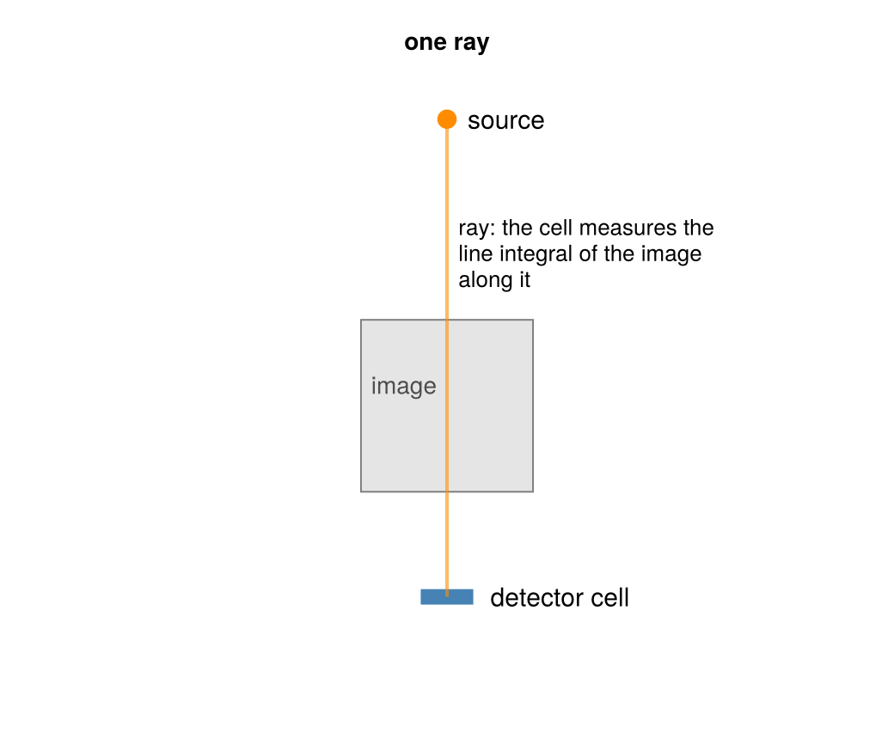
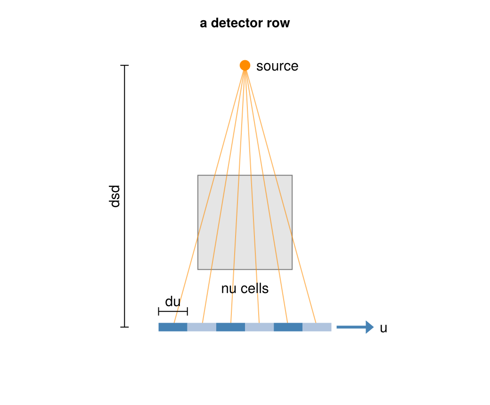
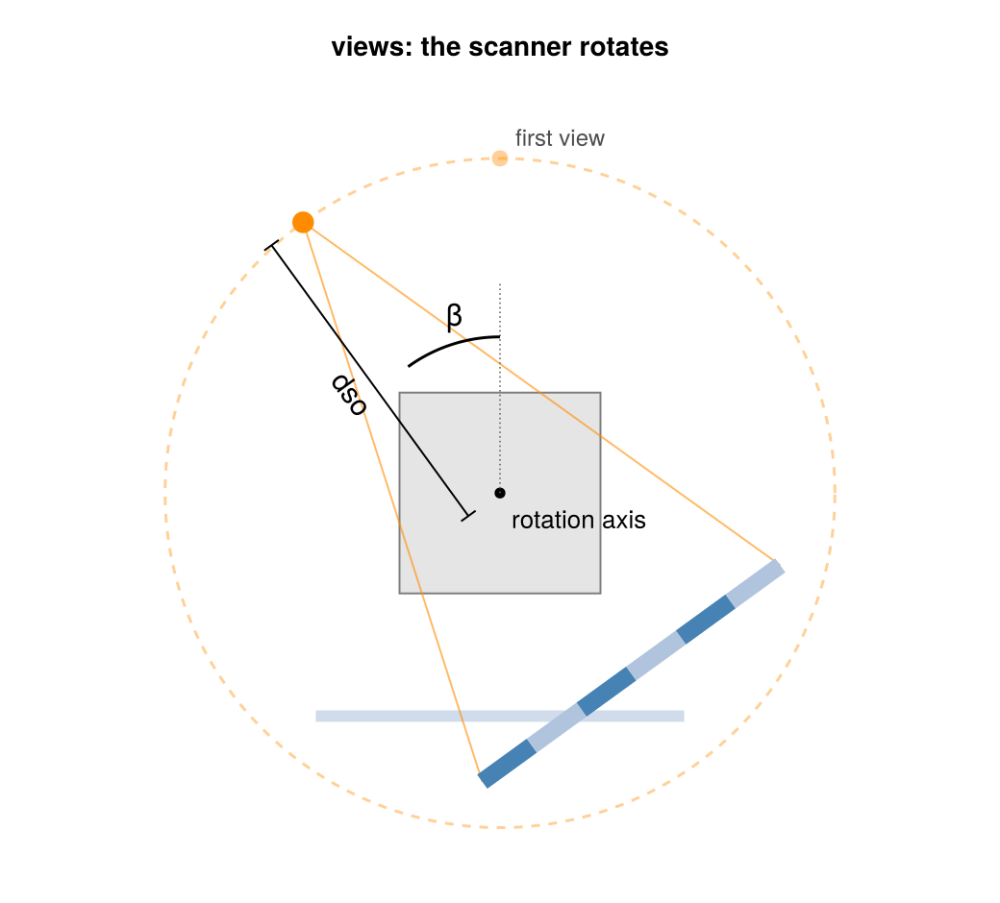
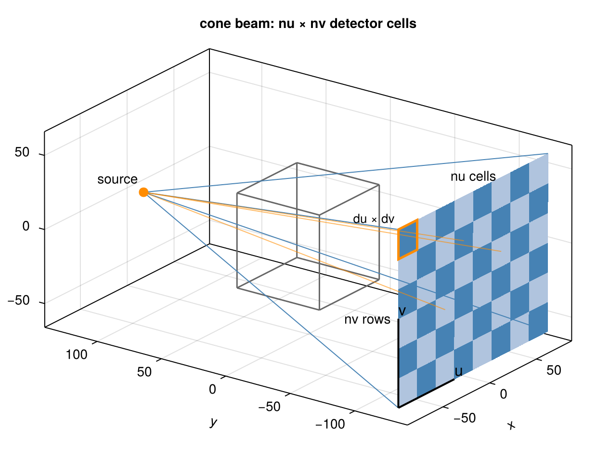
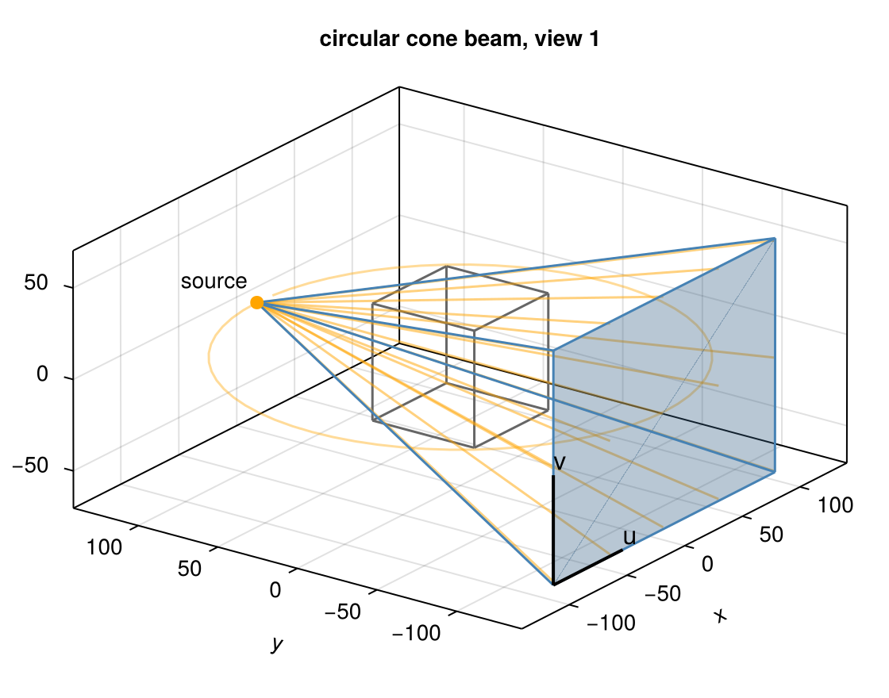
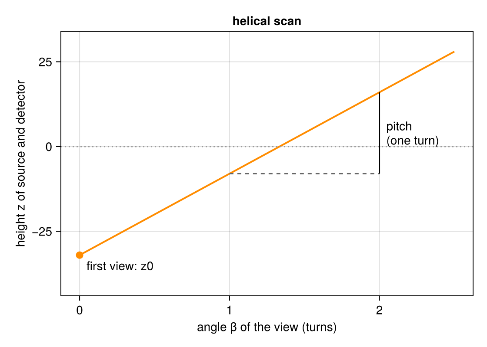
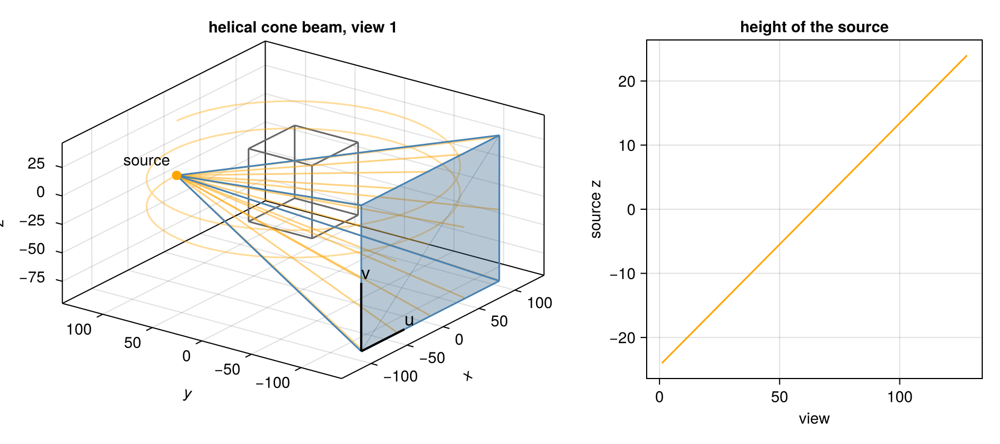

Parameters of a Scan
The functions that build the common scans, such as circular_cone_beam and helical_cone_beam, take a handful of parameters: angles, dso, dsd, nu, nv, du, dv, and for helical scans pitch and z0. This page builds a scan up step by step, from a single ray to a helical cone-beam scan, and introduces each parameter where it first appears.
using CTOperators, CairoMakiedepth_figure (generic function with 1 method)One ray
An X-ray source sends a ray through the object to a detector cell. The cell measures how much the ray was attenuated; after taking the logarithm, this is the line integral of the attenuation coefficient along the ray: the sum of the image values along the ray, weighted by the length of the ray in each voxel. Computing these line integrals for all rays is the forward projection.

A detector row
A detector has many cells side by side: nu cells of size du along the direction u. Every cell gets its own ray from the source, so a single position of source and detector measures a fan of line integrals. dsd is the distance from the source to the detector.

Views
Source and detector rotate together about the rotation axis, the z axis through the origin. The source moves on a circle of radius dso, the distance from the source to the axis. Each position is a view; its angle β is measured counterclockwise from the y axis. angles lists the angles of all views, in radians.

Cone beam
A cone-beam detector has nv rows of cells along the direction v, parallel to the rotation axis, each of size dv. The rays from the source to all cells form a cone, and a single view measures a 2D image of line integrals, nu × nv values. The cells are drawn as a checkerboard:

Together these are the parameters of a circular cone-beam scan. With 64 views over one turn:
image = ImageGeom(; dims=(64, 64, 64), deltas=(1.0, 1.0, 1.0))
circle = circular_cone_beam(; angles=range(0, 2pi, 65)[1:64], dso=128, dsd=256, nu=96, nv=64, du=2.0, dv=2.0)
datasize(circle)(96, 64, 64)The data has one detector image per view, (nu, nv, number of views). View 1 in 3D: the source (orange), the cone of rays (blue edges, a few rays orange) through the volume (gray box) to the detector; the orange circle is the path of the source.

Helical scan
In a helical scan source and detector also move along the rotation axis: by pitch per turn, starting at the height z0 in the first view. Their height therefore rises linearly with the angle. The same geometry describes an object that moves along the axis during a circular scan, for example on a table.

A helical scan takes the parameters of the circular one plus pitch and z0; here two turns, 24 mm per turn, starting 24 mm below the center:
helix = helical_cone_beam(; angles=range(0, 4pi, 128), pitch=24, z0=-24, dso=128, dsd=256,
nu=96, nv=64, du=2.0, dv=2.0)
More
All lengths are in the unit of the image (mm here). Coordinates and Conventions defines the parameters exactly, including curved detectors (detector=:arc) and detector offsets (offset_u, offset_v), and Set Up a Geometry shows parallel-beam scans, arbitrary trajectories and ray lists.
This page was generated using Literate.jl.